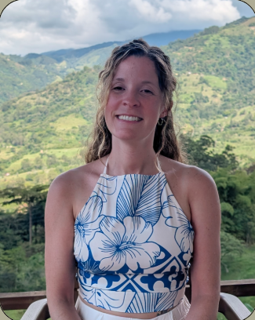
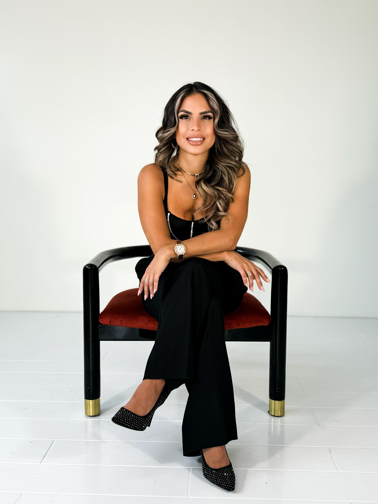

1
Ground the experience
Name what happened, what feels important, and what needs more time without forcing immediate conclusions.
The retreat may end, but the work of living what you discovered keeps unfolding. LaWayra integration coaching gives you grounded one-to-one support after your ayahuasca retreat in Colombia.
Why integration matters
Many people leave retreat feeling deeply connected to themselves, to others, and to something bigger. Then they return home to routines, relationships, work, and questions that ask for patience and support.
The coaching approach
Integration coaching is personal support for making sense of your experience, identifying what needs attention, and building grounded practices that fit your real life.
Name what happened, what feels important, and what needs more time without forcing immediate conclusions.
Explore emotional, relational, somatic, or spiritual themes that may be asking for care.
Turn insight into one or two practical actions, boundaries, conversations, or practices.
Return to the process with a coach who can help you stay connected, steady, and honest.
Integration coaching
Each coach brings a different lens to integration. Read the profiles below, then begin with a free consultation so the LaWayra team can guide you toward the support that feels most aligned.

Integration Coach & Head Of Facilitation, Masters In Psychology & Neuroscience
As Head of Facilitation at LaWayra, Monica brings a rare combination of clinical depth and direct ceremonial experience. Her background in psychology, neuroscience, and psychiatric care allows her to support clients in translating profound inner experiences into grounded, real-life change.
Her work integrates intuitive psychodynamic and schema-informed therapy, inner child work, somatic practice, and mindfulness. She focuses on identity shifts, relational patterns, emotional regulation, and helping clients move from insight into embodied, lasting transformation.
Choose Monica if you want support from someone deeply connected to LaWayra's facilitation process, with a psychology-informed lens for identity shifts, emotional regulation, and translating ceremony insights into daily life.

Integration Coach, Licensed Clinical Social Worker & Musical Therapist
Ashley Townsend has over 15 years of experience working with people of all ages with complex trauma. Ashley offers a non-diagnostic, trauma-trained approach supported by modalities such as Parts Work, psychodynamic music therapy, and somatic release.
She specializes in supporting survivors of abuse, sexual trauma, foster care, and people on the path to recovery from addiction.
Choose Ashley if you are seeking trauma-informed support, somatic grounding, Parts Work, or a careful non-diagnostic space to process complex emotional material after retreat.

Integration Coach, Jay Shetty Certified Conscious Business Coach, Political Science Graduate & Mother
Aliyah brings a compassionate and heart-led approach to personal transformation, blending conscious coaching, integration support, and over 20 years of self-development studies. As a Jay Shetty Certified Conscious Business Coach with a background in political science, she supports individuals in reconnecting with purpose, emotional alignment, and conscious living.
Grounded in faith, service, and personal growth, Aliyah is passionate about helping people integrate transformational experiences into lasting, embodied change through her work at LaWayra and healing.
Choose Aliyah if you want heart-led coaching around purpose, emotional alignment, conscious living, and turning personal insight into a more intentional way of moving through the world.
What to expect
Integration coaching is not a replacement for medical care, emergency support, or crisis treatment. It is a grounded conversation space for reflection, meaning-making, emotional support, and practical next steps.
Speak honestly about what surfaced during and after retreat with someone trained to listen carefully.
Identify simple routines, boundaries, conversations, or practices that help the experience become lived change.
Choose a coach based on the kind of support you need: clinical depth, trauma-informed care, or purpose-led coaching.
Common questions
It is for LaWayra guests or people connected to the retreat experience who want extra support after ceremony. It may be especially helpful if you are processing emotions, decisions, relationship patterns, purpose, or how to bring the experience into daily life.
Integration coaching can be deeply supportive, and some coaches bring clinical or trauma-informed training, but it is not emergency care or a substitute for medical, psychiatric, or crisis support. If you are in immediate crisis, contact local emergency services or a qualified crisis-support provider.
Start with the kind of support you need most right now. Monica is a strong fit for guests who want psychology-informed integration connected to LaWayra's facilitation process, identity shifts, relational patterns, and emotional regulation. Ashley is a strong fit for guests who want trauma-informed, somatic, Parts Work, music therapy, or addiction-recovery-aware support. Aliyah is a strong fit for guests who want heart-led conscious coaching around purpose, emotional alignment, faith, service, and intentional living.
The booking path begins with a free 30 minute consultation. From there, the LaWayra team can help you understand which coach and next step best fit your integration needs.
Integration coaching can help you reflect, clarify next steps, and stay connected to what matters. It should not guarantee a specific emotional, medical, financial, or therapeutic outcome.
Start with a free 30 minute consultation with one of our coaches. This first conversation helps you understand what kind of support fits your experience and what the next step could look like.